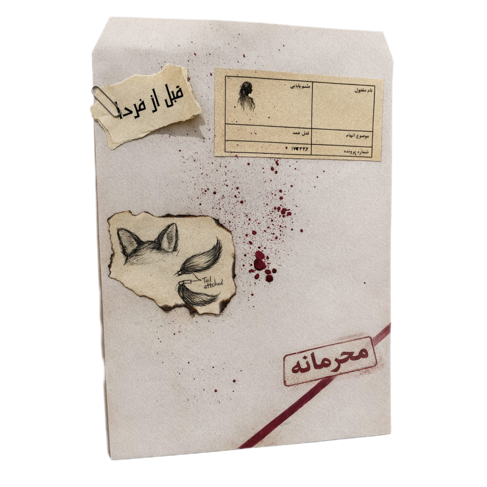

درباره بازی
به دنیایی وارد شوید که هر گوشهاش رازآلود است و هیچ چیزی آنطور که به نظر میرسد نیست. در این پروندهٔ جنایی، شما تنها بازیکن نیستید؛ شما کارآگاه، شاهد و متهمی هستید که باید حقایق تاریک را از میان لایههای دروغ، رمز و اسرار کشف کنید.
هر اتاق، هر شیء و هر نوشته، سرنخی است که ذهن شما را به چالش میکشد. یک جعبه چوبی مخفی، یک دفترچه پنهان، یا یک تابلو قدیمی – همه ممکن است کلید حل معما باشند. اما مواظب باشید: هر قدم اشتباه شما را در مسیر خطر و توطئههای غیرمنتظره میبرد.
آیا آمادهاید پرده از رازهای تاریک بردارید؟ در این بازی، هیچ چیز امن نیست، هیچ چیزی ساده نیست، و هیچ پاسخی آنطور که فکر میکنید، آشکار نمیشود. فقط کسانی که با دقت، شجاعت و ذکاوت به دنبال حقیقت بروند، میتوانند پایان شوکهکنندهٔ پرونده را کشف کنند.
پرونده جنایی قبل از فردا